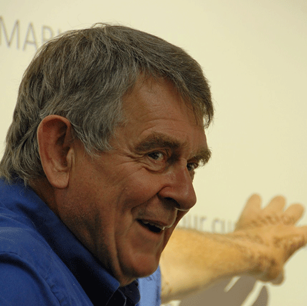
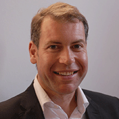
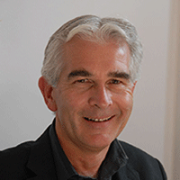
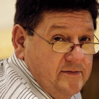
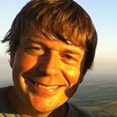

Honesty, no bias, real-life experience
High school students are exposed to a lot of university marketing. When you’re unsure of what to study and do in life, it’s easy to get drawn in.
GPS students work out what they want from a university through powerful, reflective exercises with no university sales pitches.
They live on 4 university campuses and visit 3 others to experience what life is like as a student in different places.
At the end of it they have a clearer idea of the kind of university environment that is right for them.
Essential, professional life skills
Sometimes, it's not until you enter the workplace that you truly understand the necessity of excellent communication skills, presentation skills and problem solving.
GPS students get a feel for what they’ll need in the workplace and they get the chance to build these essential skills.
My family and friends
The GPS team is made up of the people who are most important to me. I wouldn’t create a company working with anyone else ….
My father was a Professor and Dean at Manchester University and has launched over 30 different companies. Who better to teach the Enterprise Project?
My friend Ofelia treks from Honduras to the UK every year to be my right hand in running the program. She is super woman. No kidding.

Prof. Auckland,
Enterprise Project
Ofelia Ponce,
Head of Student Life
Presenters and Panelists
One of the things that makes GPS unique is the fact that students talk with real-life, successful, senior professionals. They have different backgrounds and are amazing people. No sales pitches. They tell it how it is.
Bert Dorazio,
Nestle Purina
Shubhie Panicker,
Google

Tony Stimson,
IBM

Martin Henery,
Manchester School of Business
Gwyn McCormack,
Positive Eye

Robert Muirhead,
Entrepreneur
Creative Team

Rob Auckland,
Photographer
Kelly Martin,
Creative Consultant
Resident Guidance Counselors
Each year, we invite guidance counselors to be a part of the programme: To share their knowledge and to experience UK universities. If you're a guidance counselor and interested, drop me an email to find out more: hrauckland@globalpaths.co.uk